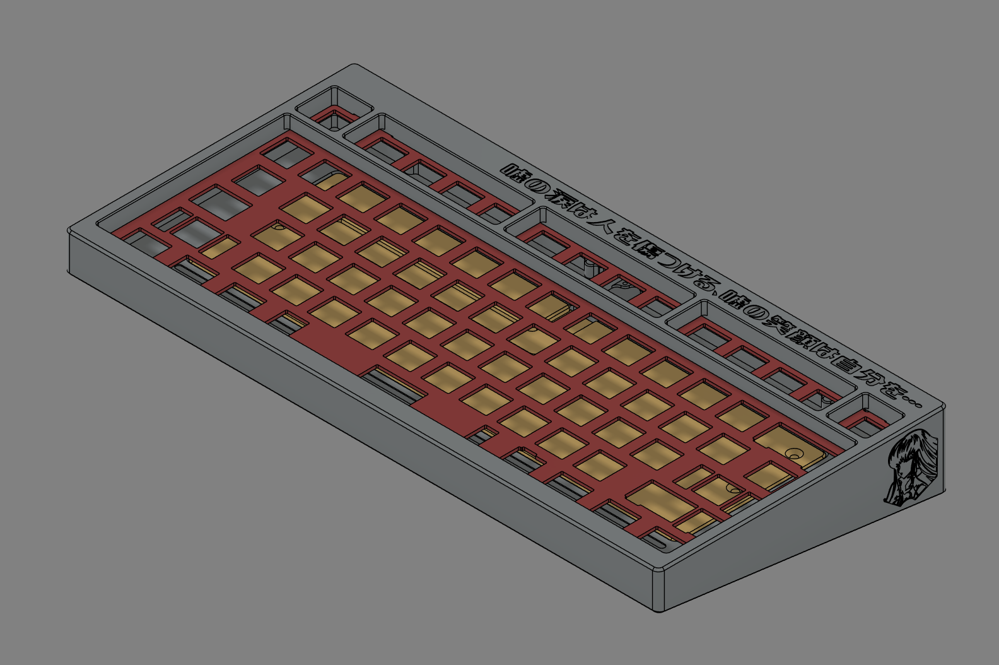
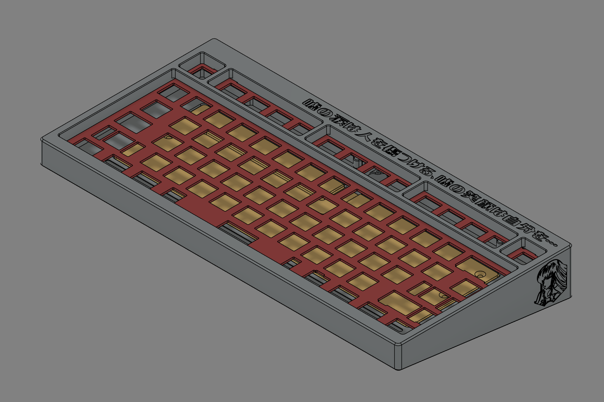

LS70
Designed in 2022 for a Code Geass devotee, LS70 combines a gasket-isolated 70% layout with C268 brass and anodized 6063 aluminum. The layered weight system delivers the regal presence the client wanted without compromising the low-latency firmware setup I rely on for daily validation work.


 
